δ 表示值的变化
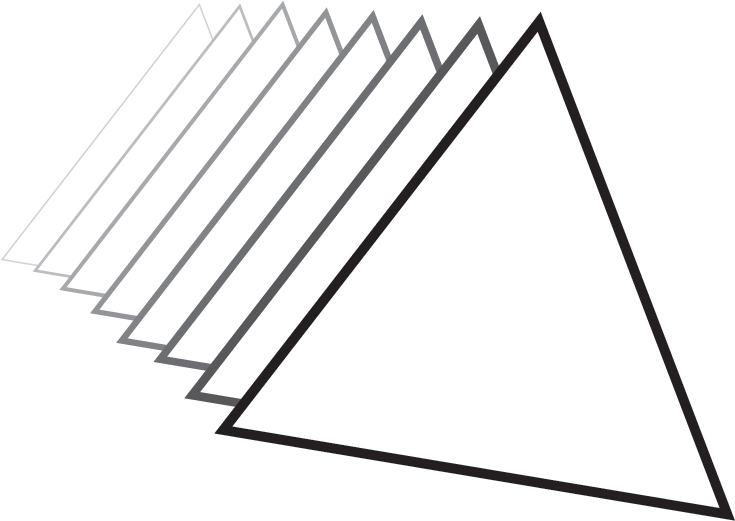
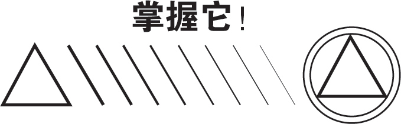
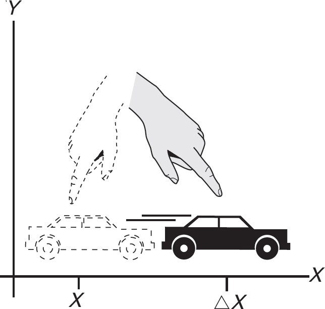
车辆从位置X 开始，向位置ΔX 驶去
Σ求和符号，简称为和（也称为希腊符号sigma Σ），表示数字序列求和运算。
注意求和符号下面的1和上面的10以及右边的变量x ，它们表示求变量x 从1到10的和。
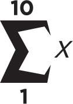
如果x ＝1，则求和运算如下所示：
1＋2＋3＋4＋5＋6＋7＋8＋9＋10＝55
在下一个示例中，1是在求和符号下面，5是在求和符号上面，右边是x ＋1。
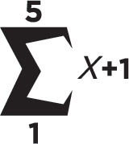
这就表示从x ＝1开始，每次x 增加1个单位，一直到x ＝5：
（1＋1）＋（2＋1）＋（3＋1）＋（4＋1）＋（5＋1）＝20
∫表示一个数列相加
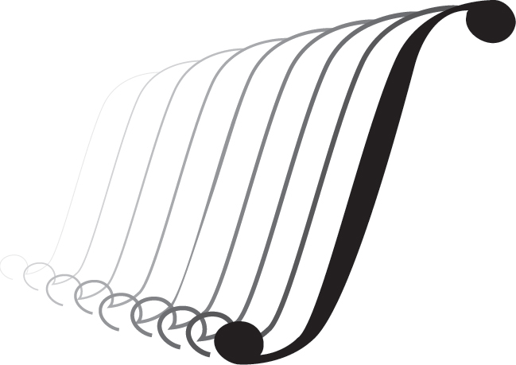
■求和符号意味着有限数量的相加求和，而积分符号允许无限小量相加。
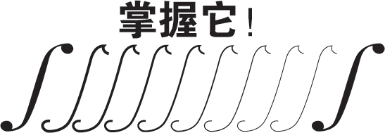
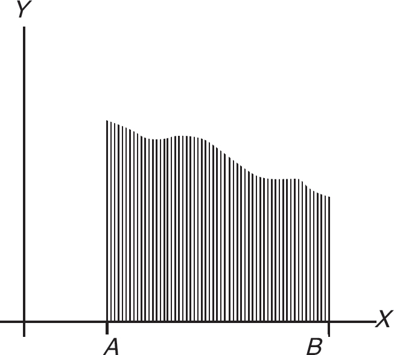
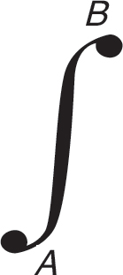
一个积分符号，底部有一个A ，顶部有一个B ，表示求点A 和点B 之间的所有的无限小的圆形面积之和
■微积分是关于“变化”的数学。
它由微分学和积分学两个分支组成。下面一节将介绍微分学的基本原理。用微分法可以计算不断变化的事物的变化率，如速率、增长率或体积水平。
■以稳定的充水速度确定圆柱体容器的水位高度是很容易的。你也可以用代数斜率公式计算任意时间的水位高度：
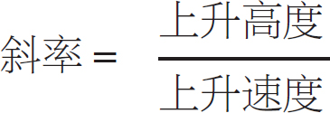
■求弧形瓶水位的变化率需要用微积分。
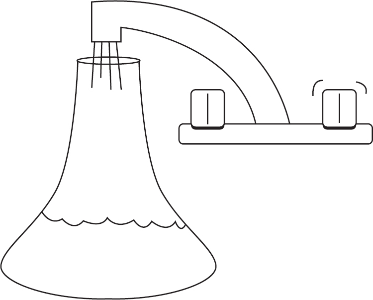
下面的实验提供了一个简单的方法来证明，为什么计算变化率需要用到微积分。
需要准备的东西
►直筒瓶
►钟形瓶
►纸
►钢笔
►水源
►时钟
►透明胶带
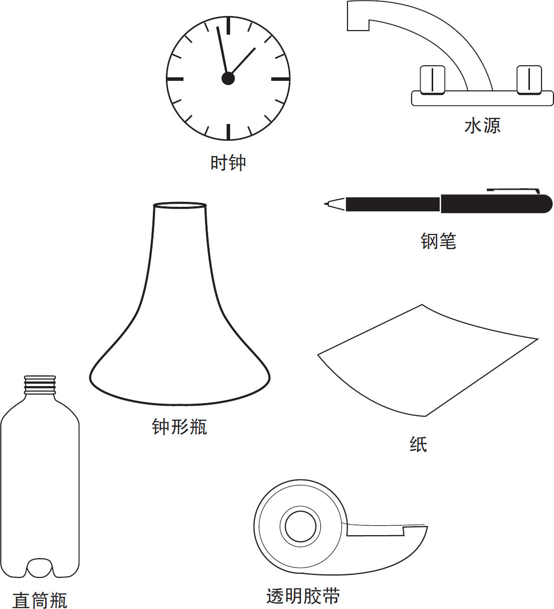
制作
首先，用纸剪出18厘米长、3厘米宽的纸条，并在纸条上标上刻度，见图4-1。
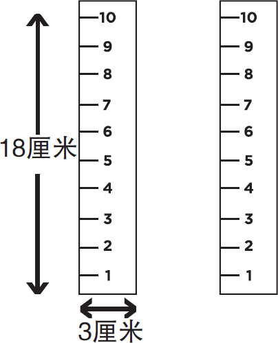
图4-1
将纸条粘贴到两个瓶子上，并保持高度一致，然后用透明胶带把它们固定起来，如图4-2所示。
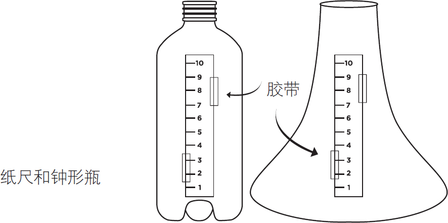
图4-2
接下来，画一个直筒瓶和钟形瓶的对比图表，如图4-3所示。
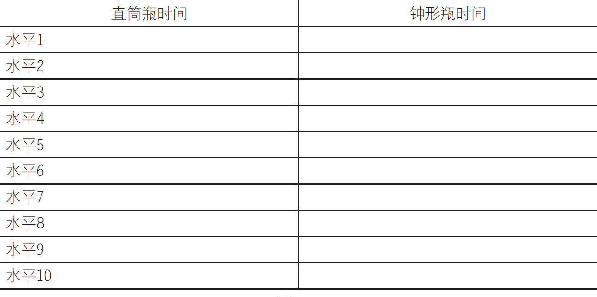
图4-3
注意：你可能需要与朋友一起来完成这个项目。你们其中的一个人负责往瓶子里注水，当水位达到一定的高度时告诉另一个人，让他可以在图表中记录水位到达的时间。
首先，把水龙头调到一个固定的位置，放出缓慢而稳定的水流。标记水龙头的位置，这样下次你就可以放出同样大小的水流。将秒表设置为零或等到下一分钟开始，把直筒瓶放在水龙头下面，如图4-4所示。
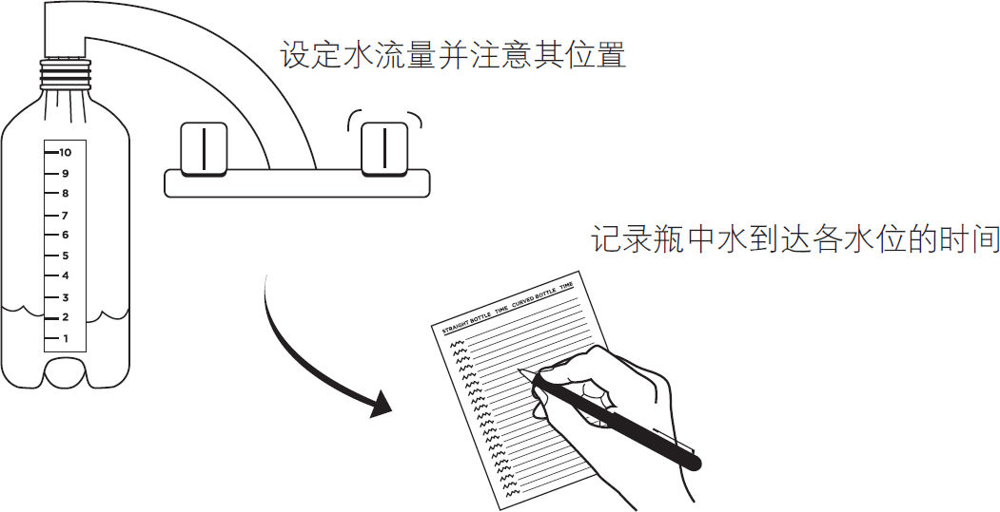
图4-4
记下水位到达纸带上的每一刻度线的时间直到瓶子满了为止。另外你还可以创建一个图表来说明结果，如图4-5所示。
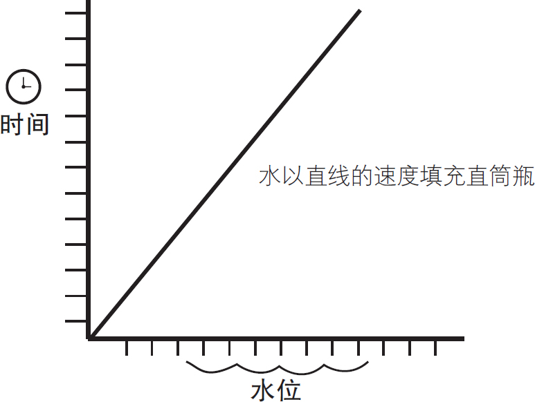
图4-5
接下来，将秒表重置为零，或者等到你手表的下一分钟开始时，把弧形瓶放在水龙头下面，如图4-6所示。记下水位到达纸带的每一刻度线的时间，直到水充满瓶子。
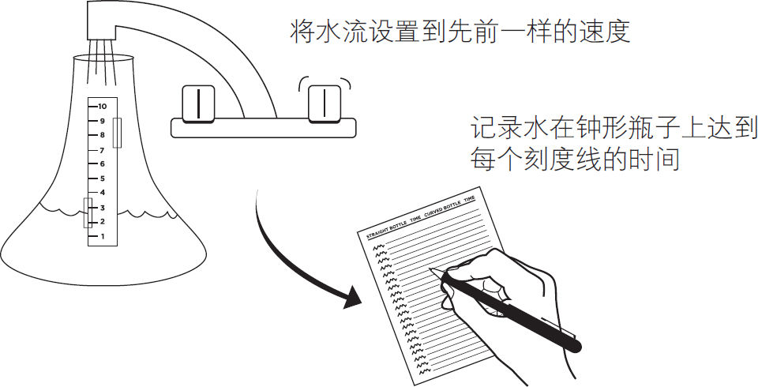
图4-6
尽管瓶子的容积相同，水也以同样的速度注入，但直筒瓶的水位高度是可以预测的，而对于弧形瓶子来说，水位高度是不可预测的。之所以这样是因为弧形瓶的底部较宽而顶部较窄，见图4-7。
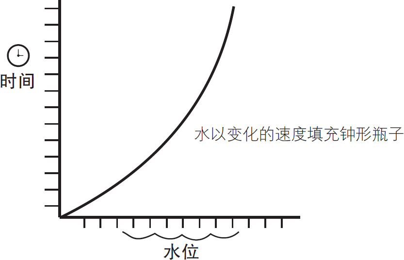
图4-7
你还可以将结果绘制为图表展示出来。
■变化率在曲线图上表现为曲线，通过求解曲线切线的斜率你可以确定某个点的瞬时变化率。
■当两点间距离足够小时，曲线就近似为直线。曲线上的第一点无限趋向第二点，但不与之重合，这样就可以近似计算曲线上单点的斜率了，极限表示两个点距离无限接近0而不为0。（因为你不能除以零。）
■极限像门吸一样，保持门无限接近但不能接触到墙壁。符号如下所示：
它表明变量h 可以无限接近但总达不到零。
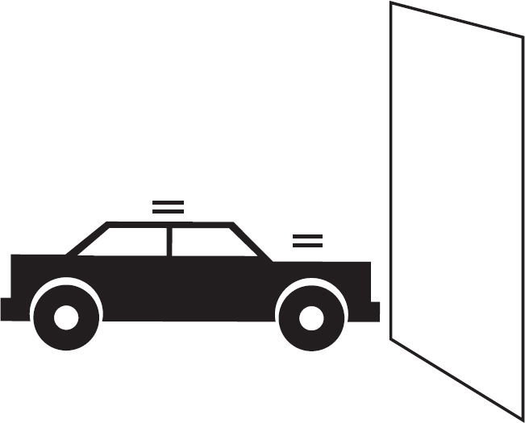
汽车离墙很近（但没有碰到它）
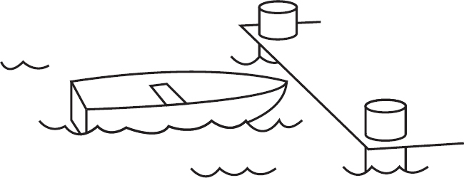
船无限接近码头（但没有碰到它）
极限符号：h接近0
但从未达到（或等于）0
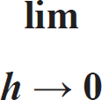
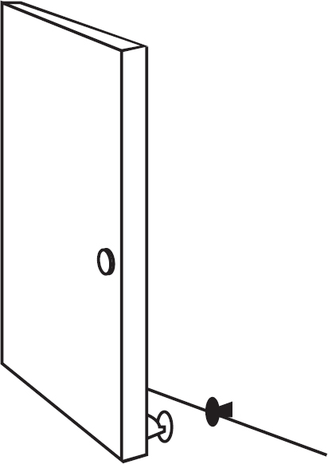
极限像门吸一样，保持门无限接近但不能接触到墙壁
■曲线的导数
代数
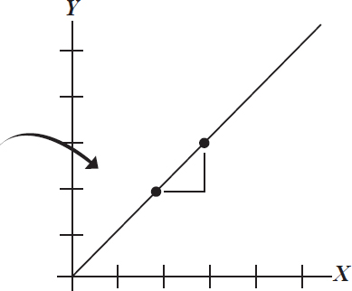
直线斜率
微积分
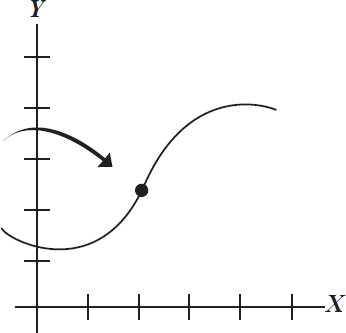
你需要两点来计算曲线的斜率或者导数

一条曲线，当无限缩短时，几乎成了直线
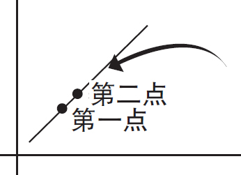
当曲线无限缩短时，它看起来是直的。第二个点可以非常接近第一个点，但不接触——极限。有两个点，斜率可以用斜率公式求得
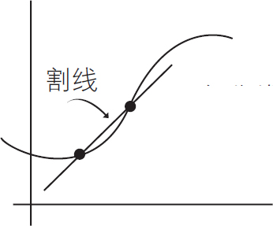
一条曲线上两点之间的直线称为割线
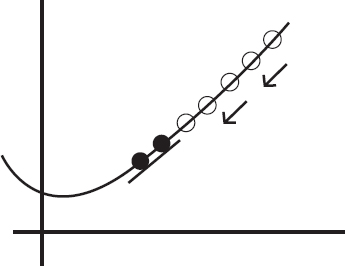
使第二个点无限接近第一个点但不等于第一个点，可以推导出第一个点的导数或者斜率
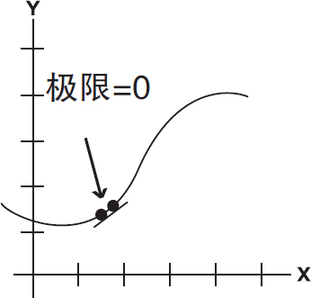
曲线的这一点的斜率或变化率或导数是由这个公式确定的：
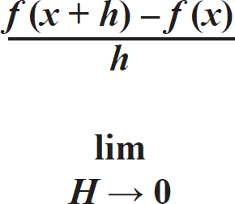
需要准备的东西：
►纸板
►回形针或黄铜纸扣
►CD或DVD或罗盘
►剪刀
►铅笔
►透明胶带
►纸
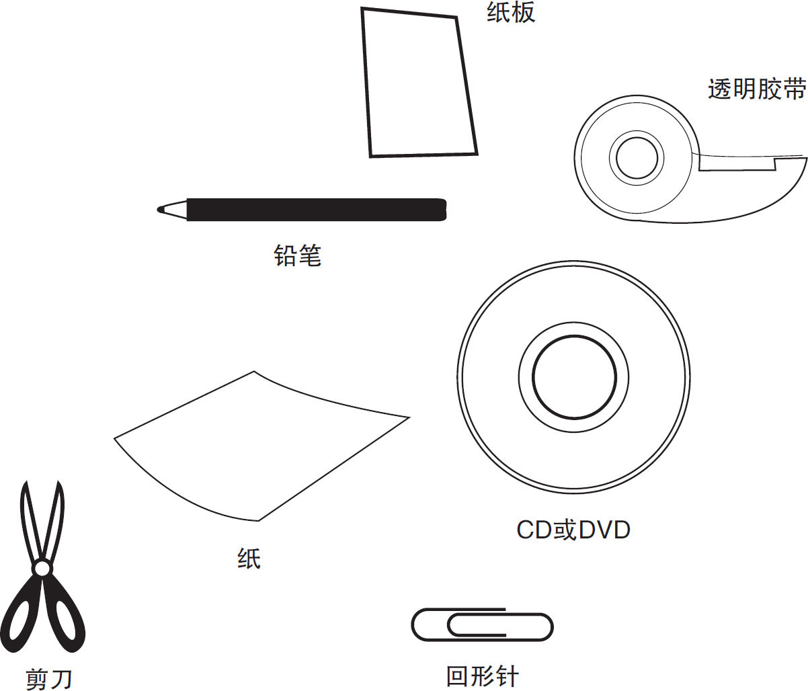
你可以使用下一页的插图作为实验参考，并按步骤操作。
首先，用纸板制作一张CD或DVD大小的圆盘，或者用罗盘来制作直径为3厘米的圆盘，如图4-8所示。
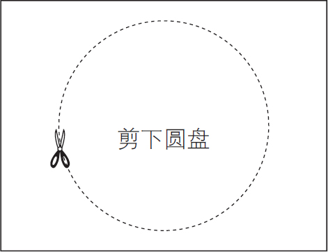
图4-8
接下来，剪出如图4-9所示的矩形纸盖子，包括“窗口”孔。或者，你也可以用铅笔画虚线，然后沿着虚线慢慢剪开窗口的部分。
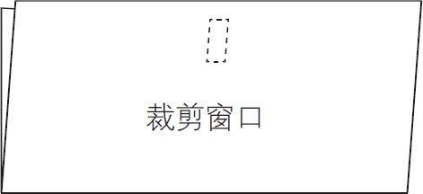
图4-9
把纸盖子对折，在窗口下方打一个孔，如图4-10所示。再在圆盘的中心打一个孔，如图4-11所示。
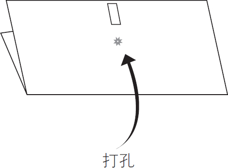
图4-10
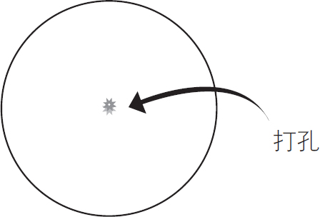
图4-11
将圆盘放在纸盖子里，并小心地将外盖上的黄铜纸扣或回形针的固定夹推入并穿过圆盘的孔洞，如图4-12所示。
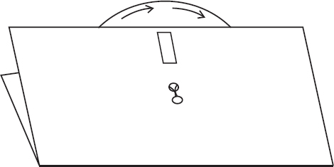
图4-12
检查卡片的正面和背面插画上的微积分基础指南，然后在表盘周围找出第二个点与第一个点相匹配，并在操作中慢慢感受“极限”，见图4-13。
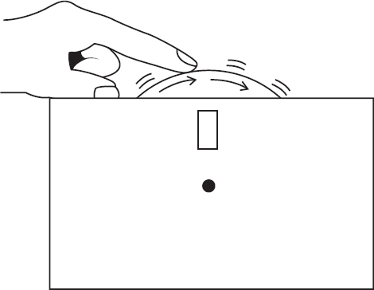
图4-13
下图是实验的一个举例说明。
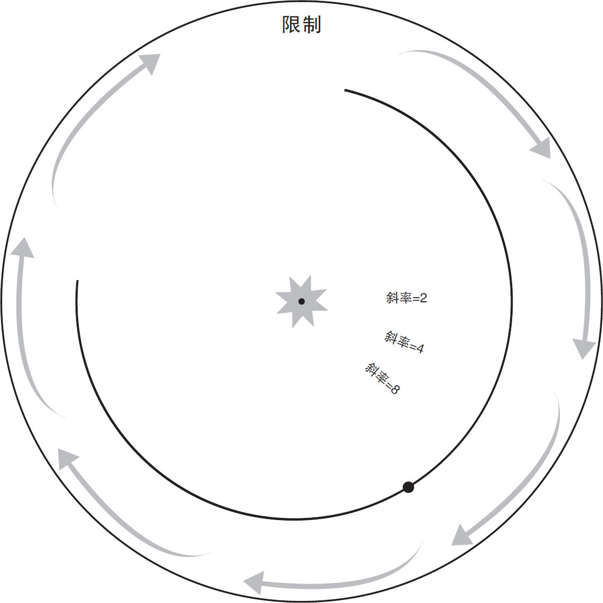
通过微积分，可以确定不断变化的事物的变化率，如速率、增长率或体积水平。
f （x ）＝x 2
注意钟形瓶的斜率与函数曲线相似，底部慢，顶部附近快。
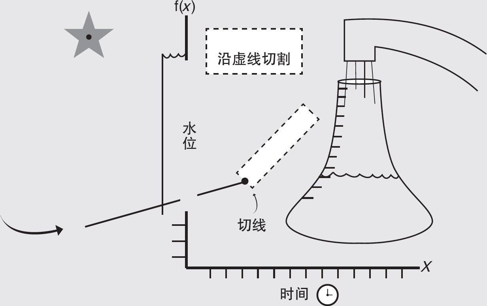
确定直筒瓶充水速率是很容易的。你可以用斜率公式预测它在任何时间点的水位。
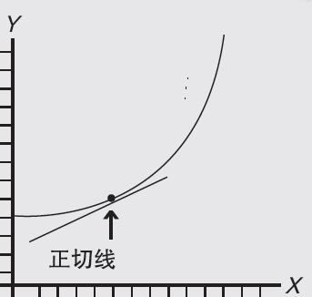
当你拉近两点间的距离时，曲线就近似于直线。让曲线上第二个点无限接近第一个点，但不与之重合，此时取极限可以计算出两点间距离接近零时的结果。（因为不能除以零。）
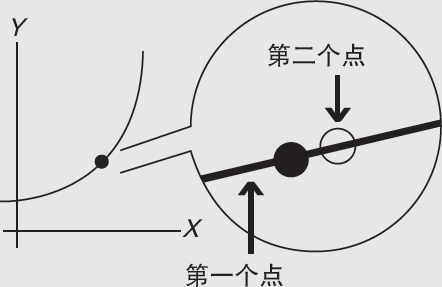
变化率显示为曲线。在曲线上找到切线的斜率可以让你确定那个点的瞬时速率。
求钟形瓶的水位变化速率需要用到微积分
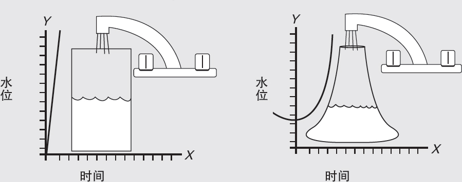
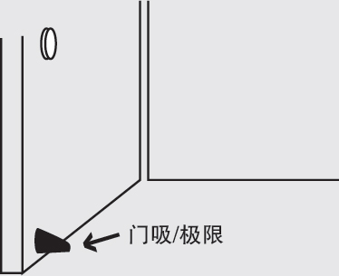
极限像门吸一样，让门无限靠近墙壁而不碰到墙壁。
极限的符号看起来像这样：
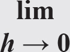
它表示变量h 可以接近但永远不能达到零。